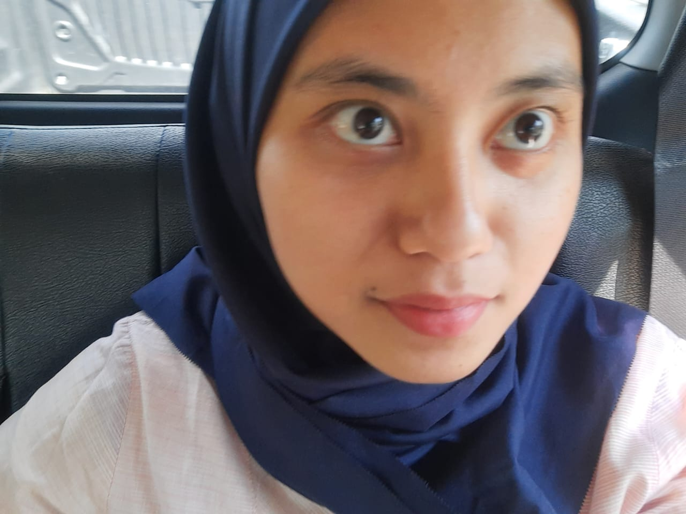
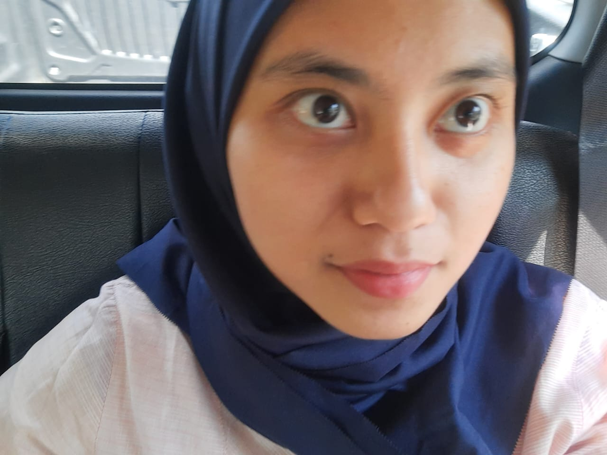
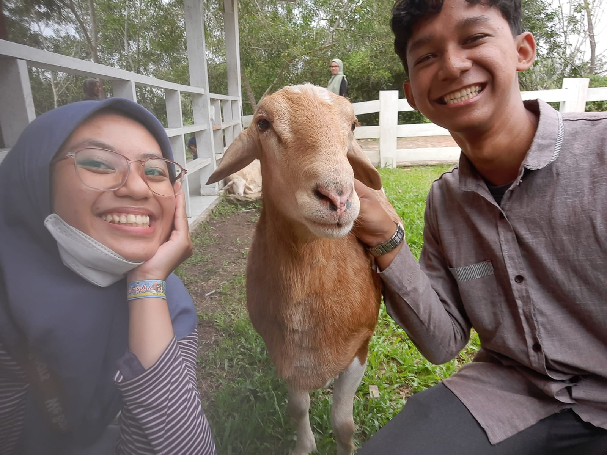
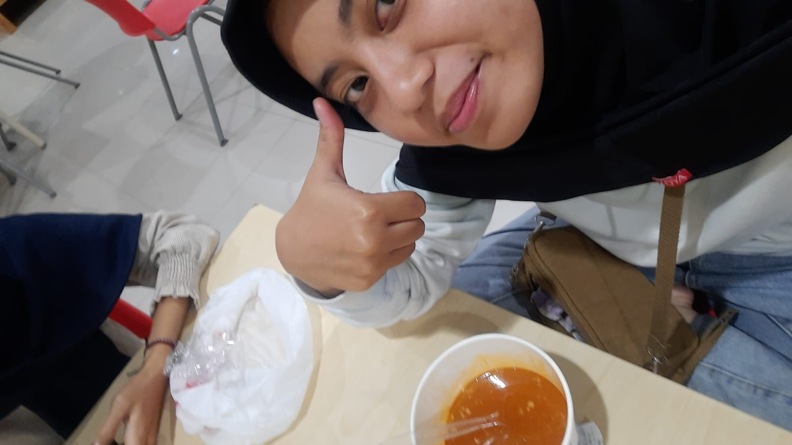

Happy Birthday!
Haii shafira rachma ramadhani yang cantik, selamat ulang tahun yaww!!!
Haii shafira rachma ramadhani yang cantik, selamat ulang tahun yaww!!!
aku minta maaf ya sayang, karna sama aku itu sering marah, sering membuatmu capek, mungkin sering menuntut banyak hal, aku juga mungkin belum bisa memahamimu sepenuhnya aku mintaa maaf banged ya untuk semuanya..
Makasih banyak ya, udah mau menerima aku selama ini, semoga habis ini kita gk sering berantem lagi ya, bisa lebih memahami satu sama lain.
Semoga di ulang tahunmu kali ini semuanya bisa segera tercapai ya, TRP cepat selesai, kp selesai, penelitian selesai, semua selesai pokoknya, dan semoga semua keinginanmu bisa tercapai aamiin.
Lets make a wish....Aamiin. Love you so much!! See you in Pekanbaru cantikk, jangan lama lama ya, i miss u so bad.
